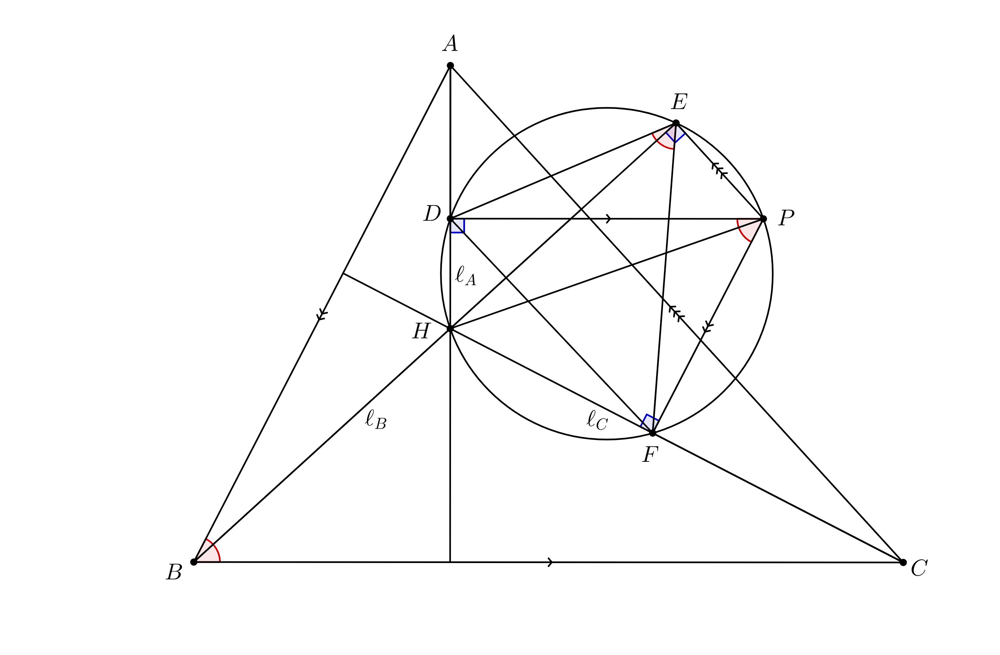

The final round of the South African Mathematics Olympiad will be taking place on Thursday, 28 July 2019. In the week leading up to the contest, I plan to take a look at some of the problems from the senior paper from 2018. A list of all of the posts can be found here.
Today we will look at the fourth problem from the 2018 South African Mathematics Olympiad:
Let $latex ABC$ be a triangle with circumradius $latex R$, and let $latex \ell_A, \ell_B, \ell_C$ be the altitudes through $latex A, B, C$ respectively. The altitudes meet at $latex H$. Let $latex P$ be an arbitrary point in the same plane as $latex ABC$. The feet of the perpendicular lines through $latex P$ onto $latex \ell_A, \ell_B, \ell_C$ are $latex D, E, F$ respectively. Prove that the areas of $latex DEF$ and $latex ABC$ satisfy the following equation:
$latex \displaystyle \operatorname{area}(DEF) = \frac{{PH}^2}{4R^2} \cdot \operatorname{area}(ABC).$
Once again, we begin by creating a diagram. Again, since I already know how the solution plays out, I've drawn in the circle that passes through $latex P, E, D, H$, and $latex F$. We do know yet that these points are concylic, however, as it is not given directly in the problem statement.
There are a number of ways in which we could try to relate the areas of $latex ABC$ and $latex DEF$.
- We could use various formulae for the area of a triangle to directly calculate $latex \operatorname{area}(ABC)$ and $latex \operatorname{area}(DEF)$.
- We could divide divide each triangle up into smaller pieces where it is easier to relate the areas.
- We could hope that triangle $latex ABC$ happens to be similar to triangle $latex DEF$, so that the area of triangle $latex ABC$ can be obtained by multiplying the area of triangle $latex DEF$ by the square of the relevant scale factor.
- We could try to use analytic/coordinate geometry. Here, the shoelace formula to calculate areas may be useful.
- We could use some combination of these approaches.
Certainly the simplest way in which the statement in the problem could be true is if triangle $latex DEF$ were similar to triangle $latex ABC$ with scale factor $latex \frac{PH}{2R}$. This may be too much to hope for, but in the process of trying to prove it we may discover some useful relationships between the angles in the diagram, or ratios of side lengths that we could use in one of the other approaches. It certainly doesn't hurt to fill in as many angles as possible using standard "angle chasing" techniques, and if that is enough to solve the problem then we will be very happy indeed.
We note that $latex 2R$ is the length of the diameter of the circumcircle of triangle $latex ABC$, so if triangle $latex ABC$ were similar to triangle $latex DEF$, then we would hope that the length of the diameter of the circumcircle of triangle $latex DEF$ is equal to $latex PH$ so that we have the correct scale factor for the two triangles. The easiest way in which this could be true is if $latex D, E$, and $latex F$ were to lie on the circle with diameter $latex PH$. As mentioned earlier, this does in fact turn out to be true!
We note that a point $latex X$ lies on the circle with diameter $latex PH$ if and only if $latex \angle HXP = 90^\circ$. The point $latex D$ has this property since $latex D$ is the foot of the perpendicular from $latex P$ onto $latex AH$. The point $latex E$, being the foot of the perpendicular from $latex P$ onto $latex BH$, also has this property, and so does the point $latex F$.
We now try to find the angles in the triangle $latex DEF$ in the hopes that they turn out to be equal to the angles in triangle $latex ABC$. We note that since $latex DEPF$ is cyclic, we have that $latex \angle DEF = \angle DPF$. Since $latex DP$ and $latex BC$ are both perpendicular to $latex \ell_A$, we know that $latex DP$ and $latex BC$ are parallel. Similarly, we know that $latex PF$ and $latex AB$ are parallel, and so the angle between the lines $latex DP$ and $latex PF$ is equal to the angle between the lines $latex AB$ and $latex BC$. (Imagine extending $latex DP$ to cut $latex AB$ at $latex X$, and extending $latex PF$ to cut $latex BC$ and $latex Y$. Then $latex XPYB$ would be a parallelogram, and $latex \angle DPF$ and $latex \angle CBA$ would be opposite each other in this parallelogram, and hence equal.) We thus have that $latex \angle DEF = \angle DPF = \angle CBA$. A similar argument shows that $latex \angle EFD = \angle EPD = \angle ACB$, and so the triangles $latex ABC$ and $latex DEF$ are similar, just as we had hoped.
One does need to be careful. In this problem, different configurations of the diagram may arise depending, for example, on whether $latex P$ is inside or outside of the triangle. The arguments that we used may not be valid any more in a different configuration of the diagram. We may find, for example, that instead of two angles being equal, they turn out to be supplementary. (For example, two angles may no longer be corresponding angles in a cyclic quad, but may instead be opposite angles in a cyclic quad.) In fact, if one reads the above post carefully, one will realise that the argument given to show that $latex \angle DPF = \angle CBA$ doesn't work exactly as written to show that $latex \angle EPD = \angle ACB$.
One common way around this pitfall is to use so-called directed angles. I do not plan to talk about this topic in this post, but I would encourage the reader to find out more about this method and to work out how the argument above needs to be changed so that it works in all possible configurations of the diagram.